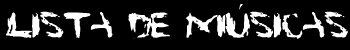

Essa é uma lista que possui todos
(ou praticamente todos) os nomes das músicas do Nirvana. Os nomes
em azul são os considerados verdadeiros, os considerados mais certos,
ou os nomes mencionados por algum componente da banda ou algum amigo. Os
em branco são os nomes inventados por pirateadores (bootleggers).
A última atualização dessa lista foi em 23 de Dezembro
de 1999.
A Bureaucratic
Desire For Revenge Part 1 / Ouroboros Is Broken Part 1 (Da banda
"Earth" com Kurt na guitarra)
A Bureaucratic
Desire For Revenge Part 2 / Ouroboros Is Broken Part 2 (Da banda
"Earth" com Kurt na guitarra)
About A Girl
/ Queer!
White Lace
& Strange / Adorn / Lemon Song (Do KAOS Radio Show, em
17/04/87 - Cover do "Thunder And Roses".
Aero Zeppelin
/ Zero Zeppelin
Ain't A Shame
(Kurt no vocal com Mark Lanegan no backing vocal)
All Along The
Watchtower (Kurt fez um cover do riff de guitarra dessa música
do Jimi Hendrix)
All Apologies
/ What Else Could I Be / Mary / All Progressive
All You Need
Is Love (Cover dos "Beatles". Krist cantou um pedaço
em 20/01/90)
Aneurysm /
Aneurism / Come On Over / Any Rithm / Come On Over And Do The Twist / Ancurysm
Anorexorcist
/ Run, Rabbit, Run / Raunchola / Suicide Samurai (Tocada no KAOS
Radio Show e em 14/12/87. "Run, Rabiit, Run" e "Raunchola" são duas
diferentes músicas.)
Another One
Bites The Dust (Cover do Queen, tocado em 10/10/91 ,em Cleveland,
OH)
Anywhere But
Here / Determined (Com Kurt, Courtney, Kristen Pfaff e Patty. Gravada
no Rio de Janeiro, em 1/93.)
Asking For
It / Ask For It (Hole com Kurt nos backing vocals)
At A Crawl
(Tocada ao vivo uma vez. Data desconhecida)
Baba O' Riley
(Cover do The Who. Tocada em 07/12/91)
Bad Moon Rising
(Veja Nota #1)
Bambi Slaughter
/ Bambi Kill / Bambie Kill (De um demo de 1988. Também gravada
no demo do Fecal Matter)
Barney Vs.
Slash (Apenas uma pequena jam em 31/10/93 Akron, OH)
Beans /
Beans & Wine
Been A Son
/ She Should, Been A Son / In The sun / She Should Have Been A Son
Beeswax
/ Bees' Wax
Big Cheese
/ Big Chief / Make Me
Big Long Now
/ Blind / Can We Show Our Faces?
Bikini Twilight
(Kurt tocou guitarra nessa música, junto com a banda "Go Team")
Black And White
Blues / Black, White And The Blues / Black And White Blues / Vendettagainst
(Uma música diferente é chamada "Vendettagainst".)
Blandest /
Saviour / Situation Change
Blew
/ Blue / Shame (Talvez também chamada de "Coxxyx")
Bloody Blood
(Informação desconhecida)
Breed /
Immodium / She Said (A música era chamada
"Immodium" antes do lançamento do "Nevermind".)
Buffy´s
Pregnant (Música gravada no demo
do Fecal Matter)
Buzz Cut
/ The Landlord Part 1/ Montage Of Heck / What's The Meaning? / Escalator
To Hell (Introdução contida na versão de "Love Buzz"
do single "Love Buzz" 7" single. Também veja "Montage Of Heck")
Call It What
You Want (De acordo com a BMI , essa é uma música
hip- hop, que veio junto com alguns exemplares do single de "Smells Like
Teen Spirit")
Castration
(Mencionada no livro 'Come As You Are'. Possivelmente outro
nome para "On A Plain")
Clean Up Before
She Comes / Clean It Up Before She Comes / Dusty Town
Color Pictures
Of Marigold / Marigold / I Want It All (A versão original
de Dave para "Marigold")
Come As You
Are / CAYA
Coxxyx
(Blew EP - talvez um demo de Blew)
Cobwebs And
Strange (Cover do The Who. Tocada em 07/11/93)
Communication
Breakdown (Cover do Led Zeppelin. Tocada por Krist e pelo Foo Fighters
em 29/08/97)
Crisco
/ Rock Whore (Do show de 30/11/91, em Glasgow. O título real
é ainda desconhecido.)
Curmudgeon
D-7 /
Dee Seven / Straight As An Arrow / Dementia 7 (Escrita pelo "The Wipers")
Dance /
Dance '93 (Gravada nas sessões de 93, quando Kurt estava bêbado.
Possivelmente uma farsa.)
Dave's Techno
Jam (Dave Grohl tocando uma espécie da batida techno, e dizendo
"TECHNOOO TECHNO!!!" , em 30/10/92)
Dazed And Confused
/ Jam (Cover do Led Zeppelin. Tocada em 26/11/89 em Mezzago, Itália)
Desconhecida
#1 (Ao vivo na Manchester Academy, 04/12/91. Com Dave nos vocais.)
Desconhecida
#2 (Tocada na casa dos Melvins, em Agosto de 1990)
Dive /
Guide / Down With Me
Do You Love
Me? (Cover do KISS)
Don't Fear
The Reaper (Pequena jam de 25/02/94 , em Milão, Itália)
Donuts (Cover
do The Legend - Pat Smear canta em uma das versões.)
Dough, Ray,
And Me / Me And My IV / Doctor And Me (Deve ter sido ensaiada nas
sessões de Março de 1994 - É ainda desconhecida.)
Down In The
Dark (Kurt em backing vocals com Mark Lanegan)
Downer
/ Donner
Drain You /
Drain Your Aneurysm / Draw You
Dream On
(Cover do Aerosmith. Tocada em parte em Phoenix, AZ em 18/10/93)
Drugs (Informação
desconhecida. Deve ser falsa.)
Dumb /
Just Happy / Ain't Over / Womb
Endless, Nameless
/ Guitar Demolition / 13:54 / Sorry Ma'am / Summer / Secret / Destruction
(A faixa escondida no "Nevermind")
Even Flow
(Cover do Pearl Jam. Apenas uma jam em 27/06/92 Turko, Finlândia)
Even In His
Youth
Finale
/ Closure / Drum Solo/ Destruction (Do final do show de 22/02/1994, em
Roma)
Floyd The Barber
/ Freud The barber / Shy
Theme from
'Carmen' / Formaldehyde / Bullshit Jam / Possibilities (Cover do
tema da ópera "Carmen")
Fountain Soda
/ Drown Soda (Veja Nota #2)
Frances Farmer
Will Have Her Revenge On Seattle / FFWHHROS / Francis Farmer
Freebird /
Sweet Jam (Cover do Lynyrd Skynyrd)
Frizzle /
Frazzle (Kurt solo em 27, 28 e 29 de Janeiro de 1994. Provavelmente não
existe)
Gallons Of
Rubbing Alcohol Flow Through The Strip / In Utero / Devalued American
Dollar Purchase Incentive Track. (Última música dos discos
importados do "In Utero".)
Get Together
/ Het Together (Introdução para "Territorial Pissings".
Cover do "The Youngbloods")
Going Blind
(Cover do KISS com o "Melvins")
Grey Goose
(Das sessões de Agosto de 1989.)
Gypsies, Tramps,
And Thieves (Pré-Nirvana com Krist nos vocais - Cover da
Cher)
Hairspray Queen
/ Disco Goddess / Disco Queen / Midnight
Half And Half
(Provavelmente tocada no final da década de 80)
Heartbreaker
(Cover do Led Zeppelin. Tocada em uma festa em '87 e em Miami,
em 27/11/93)
Heart-Shaped
Box / Wait / Heart Shaped Coffin / Haight
Hello Kitty
(Da banda paralela de Kurt, Nighty Nite, com Courtney Love e Patty
Schemel)
Help Me, Death
Jam / Come On Death (Consiste em uma mistura entre Endless, Nameless
, RFUS e Help Me, I'm Hungry)
Help Me, I'm
Hungry / Nevermind / Help / Help Me
Here She Comes
Now / Made Outta Wood (Cover do Velvet Underground)
High On The
Hog / Alcohol (TAD com Kurt nos vocais)
Hometown
(Cover do John Mellencamp)
How Many More
Times (Cover do Led Zeppelin, jammed numa festa em '87)
Hummingbirds
From Hell (Nirvana & os Melvins)
I Am Gross
(Música da banda paralela Stinky Puffs)
I Died A Swords
Man (Talvez um outro nome para "Suicide Samurai")
I Feel Fine
(Cover dos Beatles)
I Hate Myself
And Want To Die / Classics / 2 Bass Kid / Here I Am / I Hate Myself
And I Want To Die
I Wanna Be
Your Dog (Cover dos Stooges, tocado em 03/12/89, em Londres)
If I Gave My
Heart To You / If I Gave You My Heart / If I Fell (Cover dos Beatles,
tocado em 20/01/90 , em Tacoma, WA)
If You Must
/ The Extreme / I Can Live / Token Eastern Song
I'm A Boy
(The WHO cover - Krist jammed on it briefly during the 11/22/89 show)
Satisfaction
/ I'm A Vegetarian (Pequena e engraçada jam onde Chris termina falando
"Kurt Cobain" umas 10 vezes)
Immigrant Song
(Cover do Led Zeppelin. Tocada em 21/12/88 , em Hoquiam, WA)
Immodium (Veja
"Breed para detalhes)
In Bloom
/ Knows Not What It Means / He Knows Not What It Means / Not What It Means
Intro (A
introdução de "From The MUddy Banks Of The Wishkah", que
foi feita também em vários outros shows)
Drunk In Rio
/ Closing Time
/ It's Closing Soon / Closing soon (Com Courtney Love e Kurt )
Personalities
/ Jealousy / Jelousy / Jealous / Isebella (Cover do Viletones)
Jeremy
(Cover do Pearl Jam)
Jesus Doesn't
Want Me For A Sunbeam / Jesus Don't Want Me / Jesus Wants Me / Jesus
Wants Me For A Sunbeam
Token Eastern
Song / Junkyard / Happy Hour / Happy Tour / Born In A Junkyard
Laminated Effect
(Música do demo do Fecal Matter)
Lake Of Fire
(Cover do Meat Puppets)
Lemonade Nation
(Da banda paralela de Kurt, Nighty Nite, com Courtney Love e Patty
Schemel.)
Lithium
/ Lythium / Broken Mirrors / Lithilm / I'm Not Gonna Crack
Loser
(TAD com Kurt na guitarra. Música instrumental de 26/11/89)
Lounge Act
/ Tell me
Love Buzz /
Love Box / Love Bug
Love Gunn
/ Love Gun (Krist & Dave -Tocada em 16/09/1991)
Macho Man
(Apenas uma jam onde um dos membros diz "Macho, Macho Man")
Marigold
/ I Want It All / She Said / Colour Pictures Of Marigold (Dave nos vocais)
Meltdown
(Outro nome para Scentless Apprentice ou Serve the Servants)
Mexican Seafood
/ Dirty Digger / Mexican Seawood
Midnight Macaroni
(Essa música é a atual "Motherfucker", do Beck)
Milk It /
Test Me / Milk Cow / Milking It / Avant Garde / Milk Made ("Milk Made"
é listada no site da BMI. Sabe- se que é a mesma música
que "Milk It" porque possui o mesmo número de registro)
Miss World
(Com Kurt, Courtney, Kristen e Patty)
Moby Dick
/ Moby Dick Jam (Cover do Led Zeppelin)
Moist Vagina
/ MV / Marijuana / Smelly Vagina / Moiste
Vagina / 4:20 ( MV é um título censurado para essa música)
Molly's Lips
/ Mummy's home / She Says / Polly's Lips (Cover do The Vaselines)
Montage of
Heck Part 1+2 / The Landlord Part 1+2 / Montage of Heck
More Than A
Feeling (Cover do Boston)
Morphine
(Jam)
Moving In Stereo
(O final de "My Best Friend's Girl")
Mr. Moustache
/ MM
My Best Friend's
Girl / My Best Friends Girlfriend (Cover do The Cars cover. Tocada
em 01/03/94 , na Alemanha)
My Sharona
(Cover do The Knack cover.Tocada em 16/02/94, em Rennes)
Negative Creep
/ Hate Me, Never Retreat / Daddy's Little Girl
No Quarter
/ Quarter (Cover do Led Zeppelin)
Oh, Me (Cover
do Meat Puppets)
Oh, The Guilt
/ It Takes A Time (Do single do Jesus Lizard)
Old Age
(Kurt provavelmente deu essa música à Courtney)
On A Plain
/ On A Plane/ Plane
Opinion
Paper Cuts
Pay To Play
/ Make It Big (Versão demo de "Stay Away")
Pen Cap Chew
/ Rise
Pennyroyal
Tea / Tired / I'm So Tired / Household Drugs / China Tea
Plateau
(Meat Puppets cover)
Thank You
/ Play That Funky Music (Cover do Wild Cherry)
Polly
/ Cracker / Final Flight / Hollywood Smokes
("Cracker" é uma versão acústica e antiga de "Polly")
Purple Rain
(Com Foo Fighters e Krist)
Radio Friendly
Unit Shifter / Radio Friends / Four Month Blackout / Four Month
Media Blackout
Rape Me
/ Waif Me / Break Me / Wreck Me ("Waif
Me" é o nome da música nas versões censuradas do "In
Utero")
Raunchola /
Run, Rabbit, Run / Unknown (Veja Nota #4)
Red Dress
(Cover do Jad Fair)
Return Of The
Rat (Cover do "The Wipers")
Rio
(Cover do Duran Duran, tocada no show em São Paulo)
Run To The
Hills (Cover do Iron Maiden. Tocada em parte no show de 22/02/94)
Run, Rabbit,
Run (Veja Nota #3)
Sacrifice (Tocada
pelo "Melvana")
Sappy
/ Everything and nothing / Another Rule / Laundry Room / The Rocker / Sad
(Versão acústica de 'Sappy', de 1989) / Happy / VCV / Mistero
/ The Grasshopper/ Verse Chorus Verse
Scentless Apprentice
/ Away / Out Of Face
School
/ No Recess
Scoff /
Im my eyes
Scratch It
Out (Kurt na guitarra com a banda "Go Team")
Seaside Suicide
/ Suicide Samurai (Mary , a tia de Kurt, mencionou
essa música. Provavelmente um outro nome para "Suicide Samurai")
Seasons In
The Sun (Cover do Terry Jacks)
Seed
/ Misery Loves Company / The Extreme ("If You Must" é também
chamada assim algumas vezes) / Spectre / Maiden Circle / Look For Company
/ Unexpected / Sad (Outra música)
Serve The Servants
/ Sundown
Sex Bomb (Cover
do Flipper)
She Dances
In The Sand (Do show em São Paulo, em 16/01/93)
Sifting
Sky Pup
(Música do Melvins que Kurt toca guitarra)
Sliver
/ Silver / Take Me Home / Never Take Me Home / Grandma Take Me Home
Smells Like
Teen Spirit / Teen Gothic / The Hit / Teen Spirit / SLTS / Smells
Like Nirvana
Smoke On The
Water (Cover do Deep Purple , "jammed" em 22/02/94)
Something In
The Way / Something In The May
Son Of A Gun
(Cover do The Vaselines)
Song In D
(Talvez "Determined")
Sound Of Dentage
(Fecal Matter Demo)
Sounds Of Distortion
(O final do show do Especial Nirvana Alto e Bom Som, da MTV)
Spank Thru
/ Spank Through / Freedom Of choice / Make It Big / Heartbreak / Speaks
Through / Love Is A Drag
Speed Racer
Theme (Cantado uma vez no camarim)
Spread Eagle
Beagle / Spread Eagle / Spread Eagle Witch (Música do Melvins
que Kurt ajudou a produzir e tocou percussão)
Stain
/ The Same
Star Spangled
Banner (O hino americano. Foi tocado um pedaço em 30/08/92,
em Reading, Inglaterra)
Stay Away /
Pay To Play / Star Away ("Pay To Play
é uma antiga versão com letras diferentes)
Suicide Samurai
( Música tocada no demo do Fecal Matter)
Swap Meet
Sweet Emotion
(Cover do Aerosmith. Apenas uma jam)
Sweet Home
Alabama (Cover do Lynyrd Skynyrd cover, tocada em 20/01/90 e no
Acústico da MTV, na versão sem cortes)
Talk To Me
Territorial
Pissings / TP
The Dodge
/ Red Dress (Cover do Jad Fair. Apenas uma pequena jam)
The End
(Cover do The Doors)
The Man Who
Sold The World (Cover do David Bowie)
The Money Will
Roll Right In / Sit And Grin (Cover do Fang, tocado no Reading Festival
em 30/08/92)
The 'Priest'
They Called Him / Silent Night (Kurt toca guitarra no fundo, enquanto
William Borroughs conta uma história)
The Rose
(Cover do Bette Midler.)
The Void
(Cover do Raincoats provavelmente tocado por Kurt no camarim, com um violão)
tourette's
/ The Eagle Has Landed / New
Poopie / Downtown / Fineprint ("The Eagle Has Landed" é
um antigo nome para a música , assim como "New Poopie")
Turnaround
/ Pretty Scary (Cover do Devo)
Twilight Zone
(Jam do famoso show de TV american)
Twister
(Possivelmente uma música do Nighty Nite, com Patty , Courtney Love
e Kurt)
Utopia In Hell
(Farsa. É apenas alguma invenção)
Vendettagainst
/ Vendettagainst '88 (Provavelmente outro nome para alguma música
da época do "Bleach")
Verse Chorus
Verse / In His Hands / In His Room / Without a shape
Very Ape
/ Into The Fire - Into The Dirt / Into The Dirt / Punky New Wave Number
Viking Guillotine
(Informaão desconhecida. Provavelmente uma farsa.)
Violet
(Com Courtney Love)
Walk, Don't
Run (Pequena jam em 08/11/89 , em Köln, Alemanha)
Way Of The
World (Tocada por Dave, Krist & Buzz Osbourne como "Melvana")
We Wanna Be
Free (Possivelmente Nirvana, tocado em 22/11/89, para o filme "Easy
Rider")
We Will Rock
You (Cover do Queen, tocado em 19/02/92 , em Tóquio, Japão)
What's Up
(Cover do 4 non Blondes tocado em 18/10/93 em Arizona)
Where Did You
Sleep Last Night / Black Girl / My Girl / In The Pines
White Boy Funk
Sucks (Apenas uma pequena jam onde algum dos membros diz essa frase.)
Wild Thing (Cover do Troggs. Apenas
uma jam)
Yellow Submarine
(Beatles cover)
Yes!, She's
My Skinhead / She Is My Skinhead / Yes, She Is My Skinhead (Cover
do Unrest. Talvez nunca tenha sido tocada pelo Nirvana)
You´ve
Got No Right / On The Mountain / You Got No Right / AutoPilot /
All Apologies
Músicas não confirmadas
- 1994
- Bliss (Essa não é
uma música , mas provavelmente um dos pré- nomes do Nirvana)
- Blossom (Possiveelmente In Bloom)
- Dead
- Dead Is Dead (Provavelmente a mesma
acima)
- Death Here It Is Again
- Determine (Provavelmente 'Determined')
- Dissimulate
- Distorted Moon
- Fun's Monday
- Garbage Man Song
- Hydroplane
- I'm Thinking
- Jilted Again
- Leave Me Alone
- Monster Mash Jam
- Nicotine
- No Alternate (Possivelmente 'Sappy')
- Our Little Song
- Practice (Provavelmente quando
Dave diz "We practiced last night" - "Nós praticamos a noite passada")
- Punk Theme
- Ramble On Jam
- Scarf
- Slut
- Smile And Die
- Special
- Star Jam
- Stiff Woodies (Essa não
é uma música , mas provavelmente um dos pré- nomes
do Nirvana)
- Talksong
- Tededfred (Essa não é
uma música , mas provavelmente um dos pré- nomes do Nirvana)
- The Bastard
- Throat Oysters (Essa não
é uma música , mas provavelmente um dos pré- nomes
do Nirvana)
- Ups And Downs
- Vegatables (Possivelmente "Clean
Up Before She Comes")
- Virtuous Pagons
- Yearspew
Notas
Nota #1:
Bad Moon Rising
- Um cover do Creedence Clearwater Revival, tocada em alguns shows em 1987
e 1988. A banda estava se chamando "The Sellouts".
Nota #2:
Fountain Soda - Antes do "Muddy Banks"
ser lançado, haviam boatos de que um novo CD do Nirvana, duplo seria
lançado, sobre o nome "Cookie", e essa música estaria nesse
CD. Courtney Love e o Hole tocaram essa música sobre o nome de "Drown
Soda". Talvez tenha sido gravada nas sessões de 1994.
Nota #3:
Run, Rabbit, Run - Essa música
foi tocada em 21/12/88 , em Hoquiam, WA. Cover do Smackindeed be the Smack
cover.
Nota #4:
Raunchola - Tocada em 14/12/87 ,
em Tacoma, WA show. Talvez a verdadeira data do show seja 23/01/1988 was
most likely only
Traduzido e reformulado
por Eduardo Zulian©. Poison Apple
Essa lista foi feita por Rasmus
Holmen© 1999 e o "The Internet Nirvana Fanclub"
Todos os direitos reservados.